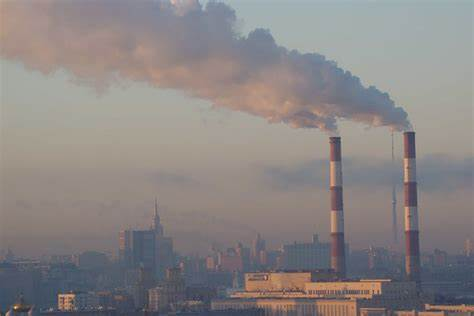
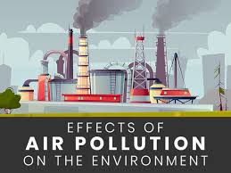
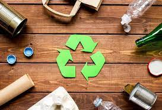

Pollution is the introduction of contaminants into the natural environment that cause adverse change. Pollution can take the form of any substance (solid, liquid, or gas) or energy (such as radioactivity, heat, sound, or light).
CAUSES OF POLLUTION
.jpeg)
There are numerous causes of pollution all over the world. For example, air pollution may occur from burning waste material, mining, car emissions, agriculture, and warfare. Vehicle emissions are ranked as the leading cause of air pollution in the world.
Other significant environmental pollutants are chemical factories, oil refineries, big livestock farms, plastic products, pesticides, and heavy metals. Natural disasters such as hurricanes, flooding, earthquakes, and droughts also lead to environmental pollution
Effects

Environmental pollution results in diverse harmful effects on living creatures and the surroundings. Air pollution often leads to health problems in humans such as respiratory diseases, heart diseases, and other ailments. Additionally, polluted air results in acidic rain which is harmful in the soil. Water pollution is a significant cause of death in most developing countries. Noise pollution often results in hearing loss, stress, sleeping problems, and even high blood pressure. Environmental pollution caused by chemicals like lead and mercury mostly lead to developmental problems in children and health complications in adults. On the global scale, pollution often results in an imbalance in the ecosystem and elimination of some endangered species. Research has shown that pollution leads to reduced productivity for workers around the world.
Controlling Pollution

Most countries have adopted measures to control pollution or reduce pollution and therefore lessen the harmful effects. The steps are critical to ensuring the environment is not destroyed through unchecked human activity. Some of the measures taken to control pollution are recycling of reusable materials, treating waste before releasing it into the environment, making compost from waste material, and reducing waste products from industrial activities. Additionally, the use of technology in controlling pollution is picking up in most developed nations.